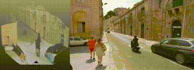

arXiv preprint, 2026

HU Wenbo (胡文博)
Ph.D. @ CUHK, Senior researcher @ Tencent ARC Lab
He was born in 1996 in Henan, China.
He graduated from Dalian University of Technology (DUT) in 2018 with a bachelor's degree in
computer
science
and technology (Outstanding Graduates of Liaoning Province), supervised by Prof. YANG, Xin.
He obtained his Ph.D. degree in Computer Science and Engineering from The Chinese University of
Hong
Kong
(CUHK) in 2022, supervised by Prof. WONG,
Tien-Tsin.
From 2022 to 2023, he was a researcher and developer at
PICO Mixed Reality, Bytedance.
Since November 2023, he joined Tencent as a senior researcher, leading an effort to
Generative World
Model, including 3D from Images/Videos, Novel View Synthesis, and Video Generation.
His works have been selected as Best Paper Finalist in ICCV'2023, and Best Paper
at
PixFoundation workshop in CVPR'2025.
He received the CCF Elite Collegiate Award in 2017.
He has served as a reviewer for top-tier conferences and journals, including SIGGRAPH, SIGGRAPH
Asia,
CVPR,
ICCV, ECCV, NeurIPS, ICML, EG, TVCG, IJCV, etc.
We have several open positions for research interns and full-time
researchers. Feel free to drop me an email if you are interested.
News!
[01/2026]
Invited to give a talk at Winter3DV, a closed-door workshop on 3D vision.
[10/2025] Serving as Program Committee for Mini3DV 2025 (a high-quality closed-door workshop), on World Modeling session.
[09/2025]
ViewCrafter is accepted to
TPAMI!
[06/2025]
Three papers (one is Oral) accepted to ICCV'25.
[06/2025]
Our DepthCrafter is selected as Best Paper at
PixFoundation
workshop in CVPR'25!

[06/2025]
Invited talk by CSIG about
"基于视频生成模型的场景演变生成最新进展".
[04/2025]
Invited talk by China3DV
2025 about
"GenConstruction".
[03/2025]
Invited talk by GAMES about
"Generative Novel View Synthesis".
[03/2025]
Invited talk by AnySyn3D
about
"Video Diffusion for 3D".
[03/2025]
We released code and models for TrajectoryCrafter.
[02/2025]
Three papers accepted to CVPR'25.
[10/2024]
Invited talks by Chinagraph
about:
[DepthCrafter, StereoCrafter,
ViewCrafter] and
[Tri-MipRF, Rip-NeRF, Analytic-Splatting].
[09/2024]
One paper accepted to NeurIPS'24.
[07/2024]
Four papers accepted to ECCV'24.
[05/2024]
Invited talk by NeRF/GS & Beyond about Anti-Aliasing in Neural Rendering. [Slides]
[04/2024]
Invited talk by China3DV 2024 about Anti-Aliasing in Neural Rendering.
[03/2024]
One paper conditionally accepted to SIGGRAPH'24.
[02/2024]
One paper accepted to CVPR'24.
[10/2023]
Our Tri-MipRF was selected in ICCV'23 Best Paper
Finalist!
[08/2023]
Invited talk by GAMES about
our Tri-MipRF.
[07/2023]
Our Tri-MipRF was accepted to ICCV'23 as ORAL presentation.
[07/2023]
One paper on invertile image downscaling accepted to TIP'23.
[08/2022]
One paper conditionally accepted to SIGGRAPH Asia'22 (Journal Track).
[05/2022]
Passed the oral defense and became a Dr.
[08/2021]
Invited talk by 智东西
about our BPNet.
[07/2021]
One paper on lighting estimation accepted to TIP'22.
[07/2021]
Two papers accepted to ICCV'21.
[07/2021]
One paper on 3D human pose estimation accepted to ACM MM'21.
[06/2021]
Invited talk at ScanNet CVPR'21
Workshop about
our BPNet (Recording).
[06/2021]
Code of BPNet is released now.
[03/2021]
One paper conditionally accepted to CVPR 2021 (Oral).
[08/2020]
One paper conditionally accepted to SIGGRAPH Asia 2020.
[08/2018]
I start my Ph.D study at CUHK.
[01/2018] I will work as a research intern at SenseTime.
Selected publications. Full list on Google Scholar
*equal contribution
†corresponding author
‡project leader



Education
Aug. 2018 - May. 2022
The Chinese University of Hong Kong
Dept. of Computer Science & Engineering
Ph.D. in Computer Science

Sep. 2014 - Jun. 2018
Dalian University of Technology
Dept. of Computer Science and Technology
B.Eng. in Computer Science Rank: 3/105, GPA:
90.3/100
Work Experience


- CN108827302A (In process), “Multi-rotor aerocraft air navigation aid based on rotor tachometric survey”.
- CN107656227B (Issued Oct. 2019), “Magnetometer calibration method based on Levenberg-Marquardt algorithm”.
- CN107655463B (Issued Oct. 2019), “Electronic compass calibration method based on simulated annealing”.
- CN207400517U (Issued May. 2018), “Intelligent toothbrush system ”.
Miscellaneous
Excited to share our #TrajectoryCrafter, a diffusion model for Redirecting Camera Trajectory in Monocular Videos!
— HU, Wenbo (@wbhu_cuhk) March 10, 2025
Try to explore the world underlying your videos~
Page: https://t.co/hWuDRDcv10
Demo: https://t.co/e3JF0SSXIC
Code: https://t.co/Y84MN6D2iO pic.twitter.com/WAS9Vbbosu
Introducing 𝚅𝚒𝚎𝚠𝙲𝚛𝚊𝚏𝚝𝚎𝚛 🥳. 𝚅𝚒𝚎𝚠𝙲𝚛𝚊𝚏𝚝𝚎𝚛 can generate high-fidelity novel views from single or sparse input images with accurate camera pose control!
— Jinbo Xing (@Double47685693) September 5, 2024
✨Paper: https://t.co/dH4Dw0Eb1e
🎯Code: https://t.co/53ai21Px99
🥁Demo: https://t.co/9xCyqtsFco pic.twitter.com/R5ZZpYfdM3
I ported DepthCrafter to ComfyUI! 🔥
— akatz (@akatz_ai) October 18, 2024
Now you can generate super stable depthmap videos from any input video.
The VRAM requirement is pretty high (>16GB) if you want to render long videos in high res (768p and up)
It pairs well with Depthflow!
Repo link in comments below👇 pic.twitter.com/dlS5wr7mRU
Introducing StereoCrafter: Transforming monocular videos into high-fidelity 3D movies, compatible with various depth estimation methods and currently performing best with DepthCrafter. Feel free to download and experience the 3D results on our project page using Vision Pros,… pic.twitter.com/6YEHisStz8
— Ying Shan (@yshan2u) September 12, 2024
Excited to share our DepthCrafter, a super consistent video depth model for long open-world videos!
— HU, Wenbo (@wbhu_cuhk) September 4, 2024
Project webpage: https://t.co/9SiMUv4hoW https://t.co/qy55L7cm44 pic.twitter.com/TZBWnjEGmk
— Kosta Derpanis (@CSProfKGD) October 4, 2023